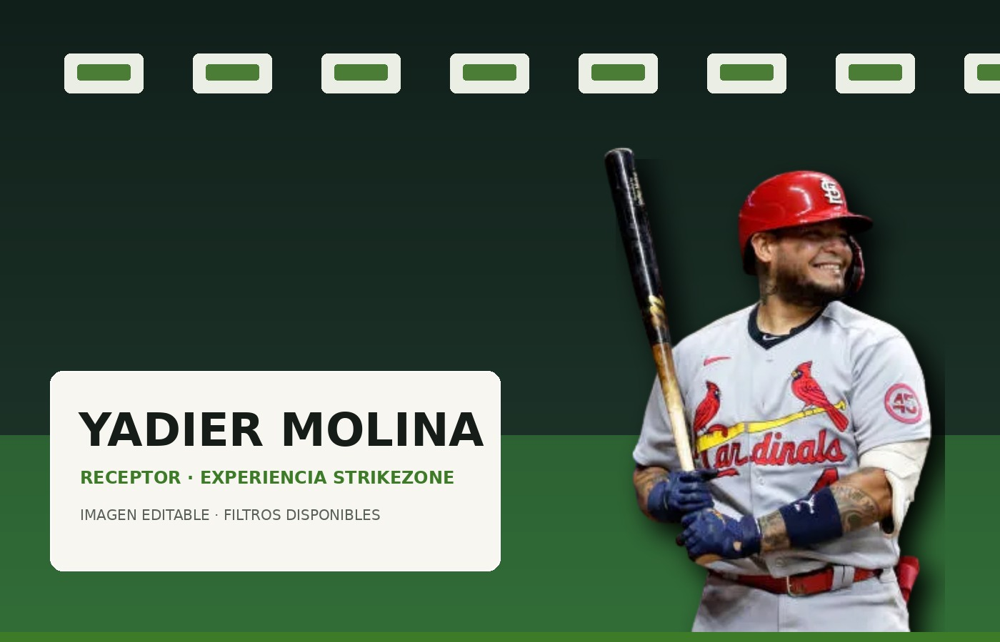
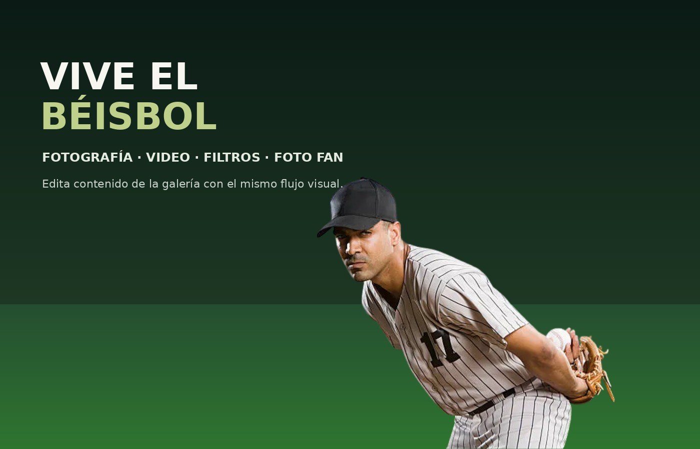
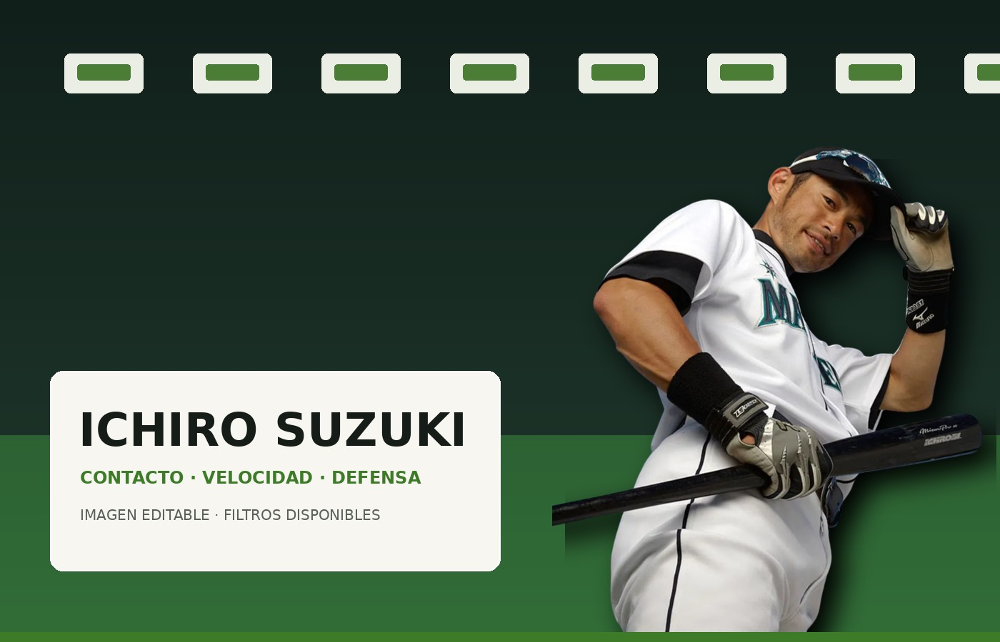
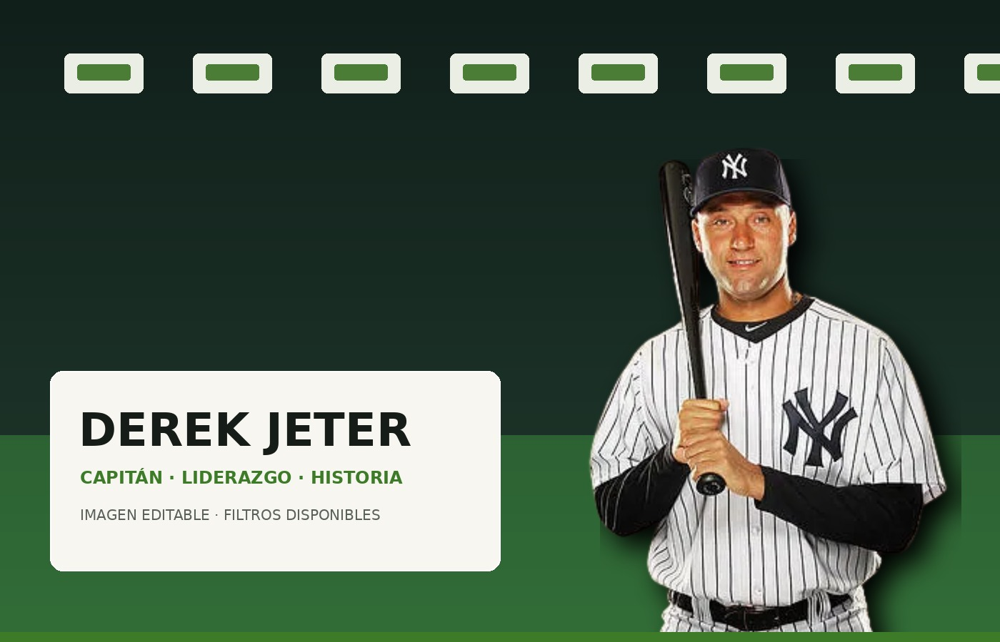
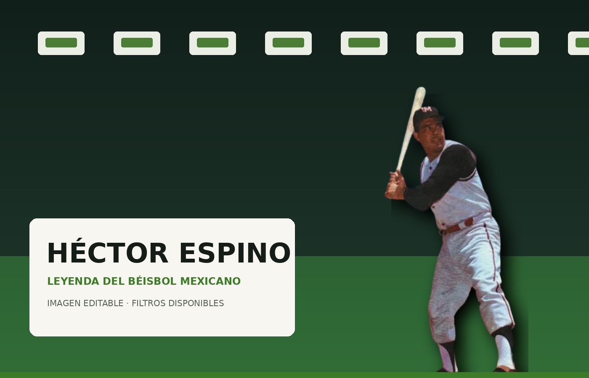

Imagen · editable
Yadier Molina
Retrato editable de jugador. Usa el editor común para aplicar filtros, guardar o descargar.

Galería multimedia
Las imágenes de jugadores y los videos de bateo utilizan el mismo flujo: abrir → aplicar filtro → guardar en tu perfil o descargar. Foto Fan agrega una experiencia de cámara con accesorios temáticos.
Contenido editable
Los clips incluidos son demostrativos para validar el flujo técnico de filtros de video; pueden sustituirse por material final del proyecto sin cambiar el editor.

Retrato editable de jugador. Usa el editor común para aplicar filtros, guardar o descargar.

Contacto, velocidad y defensa. Usa el editor común para aplicar filtros, guardar o descargar.

Capitán y liderazgo. Usa el editor común para aplicar filtros, guardar o descargar.

Leyenda del béisbol mexicano. Usa el editor común para aplicar filtros, guardar o descargar.
Clip demostrativo listo para aplicar filtros. La exportación genera una copia WebM con el filtro aplicado.
Clip demostrativo listo para aplicar filtros. La exportación genera una copia WebM con el filtro aplicado.
Clip demostrativo listo para aplicar filtros. La exportación genera una copia WebM con el filtro aplicado.
Foto Fan
Activa la cámara, usa un casco, gorra o pintura de afición y guarda la captura junto a tus demás medios. Cuando el navegador ofrece detección facial, el accesorio intenta seguir el rostro; de lo contrario usa un ajuste centrado.
Abrir cámara{kind=link}
{kind=link}
{kind=link}
{kind=link}